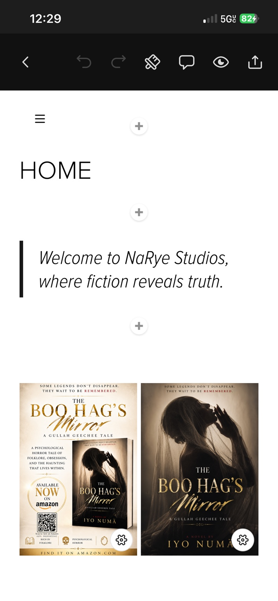

NaRye Studios
Whispered Stories.
Finally Spoken.
A narrative-driven creative studio creating psychologically immersive stories rooted in folklore, emotional realism, and the unseen forces shaping human behavior.
Featured Publication
The Boo Hag's Mirror
A Gullah Geechee Tale · Psychological Horror
A story where folklore, fear, obsession, and the haunting things that live within us meet.
View the Publication →
Selected Works
Stories in development.


From the Journal
Q&A, ideas & personal notes.
Personal
Iyo Numä, Who Am I
Who I am as Iyo Numä, the perspective behind the work, and the Southern influences shaping my voice.
Read →Horror
Why folklore, why horror?
Why horror and folklore kept appearing in the writing before I had language for what I was doing.
Read →Folklore
Where does folklore fall in traditional literature?
How folklore moves through poetry, prose, mythology, and the stories people carry across generations.
Read →NaRye Studios
Stories that stay with you.
The philosophy behind the studio and the kinds of stories NaRye is building.
Read →